공조냉동기계기사(구) (2015-05-31 기출문제)
1과목: 기계열역학
1. 상태와 상태량과의 관계에 대한 설명 중 틀린 것은?
- 순수물질 단순 압축성 시스템의 상태는 2개의 독립적 강도성 상태량에 의해 완전하게 결정된다.
- 상변화를 포함하는 물과 수증기의 상태는 압력과 온도에 의해 완전하게 결정된다.
- 상변화를 포함하는 물과 수증기의 상태는 온도와 비체적에 의해 완전하게 결정된다.
- 상변화를 포함하는 물과 수증기의 상태는 압력과 비체적에 의해 완전하게 결정된다.
(정답률: 55%)

2. 이상기체의 등온과정에 관한 설명 중 옳은 것은?
- 엔트로피 변화가 없다.
- 엔탈피 변화가 없다.
- 열 이동이 없다.
- 일이 없다.
(정답률: 56%)
3. 두께 1 cm, 면적 0.5 m2의 석고판의 뒤에 가열판이 부착되어 1000 W의 열을 전달한다. 가열판의 뒤는 완전히 단열되어 열은 앞면으로만 전달된다. 석고판 앞면의 온도는 100℃이다. 석고의 열전도율이 k = 0.79 W/mㆍK일 때 가열 판에 접하는 석고 면의 온도는 약 몇 ℃인가?
- 110
- 125
- 150
- 212
(정답률: 61%)
4. 기본 Rankine 사이클의 터빈 출구 엔탈피 htc = 1200kJ/kg, 응축기 방열량 qL = 1000kJ/kg, 펌프 출구 엔탈피 hpe = 210kJ/kg, 보일러 가열량 qH = 1210kJ/kg이다. 이 사이클의 출력일은?
- 210 kJ/kg
- 220 kJ/kg
- 230 kJ/kg
- 420 kJ/kg
(정답률: 50%)
5. 실린더에 밀폐된 8kg의 공기가 그림과 같이 P1 = 800kPa, 체적 V1 = 0.27m3에서 P2 = 350kPa, 체적 V2 = 0.80m3으로 직선 변화하였다. 이 과정에서 공기가 한 일은 약 몇 kJ 인가?
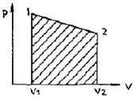
- 254
- 3⑤
- 382
- 390
(정답률: 67%)
6. 역 카르노사이클로 작동하는 증기압축 냉동 사이클에서 고열원의 절대온도를 TH, 저열원의 절대온도를 TL이라 할 때, TH/TL = 1.6이다. 이 냉동사이클이 저열원으로부터 2.0kW의 열을 흡수한다면 소요 동력은?
- 0.7kW
- 1.2kW
- 2.3kW
- 3.9kW
(정답률: 62%)
7. 절대 온도가 0에 접근할수록 순수 물질의 엔트로피는 0에 접근한다는 절대 엔트로피 값의 기준을 규정한 법칙은?
- 열역학 제 0법칙이다.
- 열역학 제 1법칙이다.
- 열역학 제 2법칙이다.
- 열역학 제 3법칙이다.
(정답률: 64%)
8. 클라우지우스(Clausius) 부등식을 표현한 것으로 옳은 것은? (단, T는 절대 온도, Q는 열량을 표시한다.)
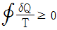
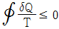
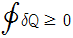
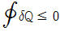
(정답률: 73%)
9. 배기체적이 1200 cc, 간극체적이 200 cc의 가솔린기관의 압축비는 얼마인가?
- 5
- 6
- 7
- 8
(정답률: 58%)
10. 오토사이클(Otto cycle)의 압축비 ε = 8 이라고 하면 이론 열효율은 약 몇 %인가? (단, k = 1.4이다.)
- 36.8%
- 46.7%
- 56.5%
- 66.6%
(정답률: 69%)
11. 어떤 용기에 부착된 압력계에 읽힌 계기압력이 150kPa이고, 국소대기압이 100kPa일 때 용기 안의 절대 압력은?
- 250kPa
- 150kPa
- 100kPa
- 50kPa
(정답률: 72%)
12. 펌프를 사용하여 150 kPa, 26℃의 물을 가역 단열과정으로 650 kPa로 올리려고 한다. 26℃의 포화액의 비체적이 0.001 m3/kg이면 펌프일은?
- 0.4 kJ/kg
- 0.5 kJ/kg
- 0.6 kJ/kg
- 0.7 kJ/kg
(정답률: 63%)
13. 공기 2kg이 300 K, 600 kPa 상태에서 500 K, 400 kPa 상태로 가열된다. 이 과정 동안의 엔트로피 변화량은 약 얼마인가? (단, 공기의 정적비열과 정압비열은 각각 0.717 kJ/kgㆍK과 1.004 kJ/kgㆍK로 일정하다.)
- 0.73 kJ/K
- 1.83 kJ/K
- 1.02 kJ/K
- 1.26 kJ/K
(정답률: 40%)
14. 어떤 냉장고에서 엔탈피 17 kJ/kg의 냉매가 질량 유량 80 kg/hr로 증발기에 들어가 엔탈피 36kJ/kg가 되어 나온다. 이 냉장고의 냉동능력은?
- 1220 kJ/hr
- 1800 kJ/hr
- 1520 kJ/hr
- 2000 kJ/hr
(정답률: 70%)
15. 대기압 하에서 물을 20℃에서 90℃로 가열하는 동안의 엔트로피 변화량은? (단, 물의 비열은 4.184 kJ/kgㆍK로 일정하다.)
- 0.8 kJ/kgㆍK
- 0.9 kJ/kgㆍK
- 1.0 kJ/kgㆍK
- 1.2 kJ/kgㆍK
(정답률: 58%)
16. 자연계의 비가역 변화와 관련 있는 법칙은?
- 제 0법칙
- 제 1법칙
- 제 2법칙
- 제 3법칙
(정답률: 64%)
17. 해수면 아래 20m에 있는 수중다이버에게 작용하는 절대압력은 약 얼마인가? (단, 대기압은 101 kPa 이고, 해수의 비중은 1.03이다.)
- 101 kPa
- 202 kPa
- 303 kPa
- 504 kPa
(정답률: 64%)
18. 압축기 입구 온도가 –10℃, 압축기 출구 온도가 100℃, 팽창기 입구 온도가 5℃, 팽창기 출구온도가 –75℃로 작동되는 공기 냉동기의 성능계수는? (단, 공기의 Cp는 1.0035 kJ/kgㆍ℃로서 일정하다.)
- 0.56
- 2.17
- 2.34
- 3.17
(정답률: 33%)
19. 분자량이 30인 C2H6(에탄)의 기체상수는 몇 kJ/kgㆍK인가?
- 0.277
- 2.013
- 19.33
- 265.43
(정답률: 65%)
20. 출력이 50kW인 동력기관이 한시간에 13kg의 연료를 소모한다. 연료의 발열량이 45000kJ/kg이라면, 이 기관의 열효율은 약 얼마인가?
- 25%
- 28%
- 31%
- 36%
(정답률: 70%)
2과목: 냉동공학
21. 어떤 냉장실 온도를 –20℃로 유지하고자 할 때, 필요한 관 길이는? (단, 관의 열통과율은 7kcal/cm2ㆍhㆍ℃이고 냉동부하는20RT, 냉매증발 온도는 –35℃이며 관의 외경은 5cm 이다.)
- 약 10.26cm
- 약 20.26cm
- 약 40.26cm
- 약 50.26cm
(정답률: 52%)
22. 냉매의 필요조건으로 틀린 것은?
- 임계온도가 높고 상온에서 액화할 것
- 증발열이 크고 액체 비열이 작을 것
- 증기의 비열비가 작을 것
- 점도와 표면장력이 클 것
(정답률: 79%)
23. 압축기 토출압력 상승 원인으로 가장 거리가 먼 것은?
- 응축온도가 낮을 때
- 냉각수 온도가 높을 때
- 냉각수 양이 부족할 때
- 공기가 장치 내에 혼입했을 때
(정답률: 64%)
24. 다음 중 압축기의 냉동능력(R)을 산출하는 식은? (단, V : 피스톤 압출량[m3/min], v : 압축기 흡입 냉매 증기의 비체적[m3/kg], q : 냉매의 냉동효과[kcal/kg], η : 체적효율)
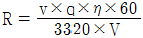
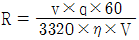
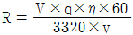
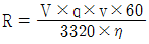
(정답률: 66%)
25. 냉동장치의 불응축가스를 제거하기 위한 장치는?
- 중간 냉각기
- 가스퍼져
- 제상장치
- 여과기
(정답률: 80%)
26. 물체 간의 온도 차에 의한 열의 이동현상을 열전도라 한다. 이 과정에서 전달되는 열량에 대한 설명으로 옳은 것은?
- 단면적에 반비례한다.
- 열전도 계수에 반비례한다.
- 온도차에 반비례한다.
- 물체의 두께에 반비례한다.
(정답률: 78%)
27. 온도식 자동팽창밸브(TEV)의 감온통 설치 방법으로 옳은 것은?
- 증발기 출구 수평관에 정확히 밀착한다.
- 흡입관 지름이 15mm일 때 관의 하부에 설치한다.
- 흡입관 지름이 30mm일 때 관 중앙에서 45°위로 설치한다.
- 흡입관에 트랩이 있으면 피하며 설치해야 할 경우 트랩 이후에 설치한다.
(정답률: 45%)
28. 스크류 압축기의 특징으로 가장 거리가 먼 것은?
- 동일 용량의 왕복동 압축기에 비하여 소형 경량으로 설치 면적이 작다.
- 장시간 연속운전이 가능하다.
- 부품수가 적고 수명이 길다.
- 오일펌프를 설치하지 않는다.
(정답률: 68%)
29. 왕복동 압축기의 흡입밸브와 배출밸브의 구비조건으로 틀린 것은?
- 작동이 확실하고 냉매증기의 유동에 저항을 적게 주는 구조이어야 한다.
- 밸브의 관성력이 크고 개폐작동이 원활해야한다.
- 밸브 개폐에 필요한 냉매증기 압력의 차가 작아야 한다.
- 밸브가 파손되거나 마모되지 않아야 한다.
(정답률: 64%)
30. 다음의 p-h 선도상에서 냉동능력이 1냉동톤인 소형 냉장고의 실제 소요동력은? (단, 압축효율(ηc)은 0.75, 기계효율(ηm)은 0.9, 엔탈피(h) 단위는 kcal/kg 이다.)
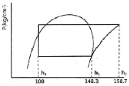
- 약 1.48kW
- 약 1.62kW
- 약 2.73kW
- 약 3.27kW
(정답률: 52%)
31. 역카르노 사이클로 작동되는 냉동기의 성적계수가 6.84이다. 응축온도가 22.7℃일 때 증발온도는?
- -5℃
- -15℃
- -25℃
- -30℃
(정답률: 66%)
32. 몰리에르 선도 상에서 표준 냉동사이클의 냉매 상태 변화에 대한 설명으로 옳은 것은?
- 등엔트로피 변화는 압축과정에서 일어난다.
- 등엔트로피 변화는 증발과정에서 일어난다.
- 등엔트로피 변화는 팽창과정에서 일어난다.
- 등엔트로피 변화는 응축과정에서 일어난다.
(정답률: 65%)
33. 흡수식 냉동기의 특징에 대한 설명으로 옳은 것은?
- 자동제어가 어렵고 운전경비가 많이 소요된다.
- 초기 운전 시 정격 성능을 발휘할 때까지의 도달 속도가 느리다.
- 부분 부하에 대한 대응성이 어렵다.
- 증기 압축식보다 소음 및 진동이 크다.
(정답률: 71%)
34. 원수 25℃인 물 1톤을 하루 동안 0℃ 얼음으로 만들기 위해 제거해야 할 열량은? (단, 얼음의 응고 잠열은 79.6kcal/kg으로 계산한다.)
- 약 0.7RT
- 약 1RT
- 약 1.3RT
- 약 1.6RT
(정답률: 66%)
35. 표준 냉동 사이클의 냉매 상태변화에 대한 설명으로 틀린 것은?
- 압축 과정 – 온도 상승
- 응축 과정 – 압력불변
- 과냉각 과정 – 엔탈피 감소
- 팽창 과정 – 온도불변
(정답률: 65%)
36. 브라인의 구비조건으로 적당하지 않은 것은?
- 응고점이 낮을 것
- 점도가 클 것
- 열전달율이 클 것
- 불연성이며 독성이 없을 것
(정답률: 76%)
37. 다음 그림과 같이 작동되는 냉동장치의 압축기 소요동력이 50kW일 때, 압축기의 피스톤 토출량은? (단, 압축기 체적효율 65%, 기계효율 85%, 압축효율 80%이다.)
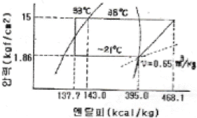
- 약 260 /h
- 약 320 /h
- 약 400 /h
- 약 500 /h
(정답률: 46%)
38. 2원 냉동사이클의 주요장치로 가장 거리가 먼 것은?
- 저온압축기
- 고온압축기
- 중간냉각기
- 팽창밸브
(정답률: 67%)
39. 냉동장치에서 액분리기의 적절한 설치위치는?
- 수액기 출구
- 압축기 출구
- 팽창밸브 입구
- 증발기 출구
(정답률: 66%)
40. 저온용 단열재의 조건으로 틀린 것은?
- 내구성이 있을 것
- 흡습성이 클 것
- 팽창계수가 작을 것
- 열전도율이 작을 것
(정답률: 78%)
3과목: 공기조화
41. 공기조화에 이용되는 열원방식 중 특수열원방식의 분류로 가장 거리가 먼 것은?
- 지역 냉ㆍ난방방식
- 열병합발전(co-generation)방식
- 흡수식 냉온수기방식
- 태양열이용방식
(정답률: 62%)
42. 냉ㆍ난방부하와 기기 용량과의 관계로 옳은 것은?
- 송풍량 = 실내취득열량 + 기기로부터의 취득열량
- 냉각코일 용량 = 실내취득열량 + 외기부하
- 순수 보일러 용량 = 난방부하 + 배관부하
- 냉동기 용량 = 실내취득열량 + 기기로부터의 취득열량 + 냉수펌프 및 배관부하
(정답률: 51%)
43. 습공기를 가열, 감슴하는 경우 열수분비 값은?
- 0
- 0.5
- 1
- ∞
(정답률: 58%)
44. 중앙식 난방법의 하나로서, 각 건물마다 보일러 시설 없이 일정 장소에서 여러 건물에 증기 또는 고온수 등을 보내서 난방하는 방식은?
- 복사난방
- 지역난방
- 개별난방
- 온풍난방
(정답률: 74%)
45. 보일러의 부속장치인 과열기가 하는 역할은?
- 과냉각액을 포화액으로 만든다.
- 포화액을 습증기로 만든다.
- 습증기를 건포화증기로 만든다.
- 포화증기를 과열증기로 만든다.
(정답률: 79%)
46. 공기조화설비를 구성하는 열운반장치로서, 공조기에 직접 연결되어 사용하는 펌프로 거리가 가장 먼 것은?
- 냉각수 펌프
- 냉수 순환펌프
- 온수 순환펌프
- 응축수(진공) 펌프
(정답률: 68%)
47. 공조부하 중 재열부하에 관한 설명으로 틀린 것은?
- 부하 계산 시 현열, 잠열부하를 고려한다.
- 냉방부하에 속한다.
- 냉각코일의 용량산출 시 포함시킨다.
- 냉각된 공기를 가열하는데 소요되는 열량이다.
(정답률: 64%)
48. 냉수코일 설계 시 공기의 통과 방향과 물의 통과 방향을 역으로 배치하는 방법에 대한 설명으로 틀린 것은? (단, △1 : 공기 입구측에서의 온도차, △2 : 공기 출구측에서의 온도차)
- 열교환 형식은 대향류방식이다.
- 가능한 한 대수평균 온도차를 크게 하는 것이 좋다.
- 공기 출구측에서의 온도 차는 5℃ 이상으로 하는 것이 좋다.
- 대수평균 온도차(MTD)인
 를 이용한다.
를 이용한다.
(정답률: 74%)
49. 보일러의 능력을 나타내는 표시방법 중 가장 적은 값을 나타내는 출력은?
- 정격출력
- 과부하 출력
- 정미 출력
- 사용 출력
(정답률: 76%)
50. 복사 냉ㆍ난방 공조방식에 관한 설명으로 틀린 것은?
- 복사열을 사용하므로 쾌감도가 높다.
- 건물의 축열을 기대할 수 없다.
- 구조체의 예열시간이 길고 일시적 난방에는 부적당하다.
- 바닥에 기기를 배치하지 않아도 되므로 이용공간이 넓다.
(정답률: 66%)
51. 각 층에 1대 또는 여러 대의 공조기를 설치하는 방법으로 단일덕트의 정풍량 또는 변풍량 방식, 2중 덕트방식 등에 응용될 수 있는 공조방식은?
- 각층 유닛 방식
- 유인 유닛 방식
- 복사 냉난방 방식
- 팬코일 유닛 방식
(정답률: 71%)
52. 실내 공기 상태에 대한 설명 중 옳은 것은?
- 유리면 등의 표면에 결로가 생기는 것은 그 표면온도가 실내의 노점온도보다 높게 될 때이다.
- 실내 공기 온도가 높으면 절대습도도 높다.
- 실내 공기의 건구 온도와 그 공기의 노점 온도와의 차는 상대습도가 높을수록 작아진다.
- 온도가 낮은 공기일수록 많은 수증기를 함유할 수 있다.
(정답률: 54%)
53. 덕트의 취출구 및 흡입구 설계 시, 계획상의 유의점으로 가장 거리가 먼 것은?
- 취출기류가 보 등의 장애물에 방해되지 않게 한다.
- 취출기류가 직접 인체에 닿지 않게 한다.
- 흡연이 많은 회의실 등은 벽 하부에 흡입구를 설치한다.
- 실내평면을 모듈로 분할하여 계획할 때에는 각 모듈에 취출구, 흡입구를 설치한다.
(정답률: 79%)
54. 50000kcal/h의 열량으로 물을 가열하는 열교환기를 설계하고자 할 때, 필요 전열면적은? (단, 25A동관을 사용하며, 동관의 열통과율은 1200kcal/m2ㆍhㆍ℃이고, 대수평균온도차는 13℃로 한다.)
- 약 3.2m2
- 약 5.3m2
- 약 8.6m2
- 약 10.7m2
(정답률: 64%)
55. 습공기의 상태변화에 관한 설명으로 틀린 것은?
- 습공기를 가열하면 건구온도와 상대습도가 상승한다.
- 습공기를 냉각하면 건구온도와 습구온도가 내려간다.
- 습공기를 노점온도 이하로 냉각하면 절대습도가 내려간다.
- 냉방할 때 실내로 송풍되는 공기는 일반적으로 실내공기보다 냉각감습 되어있다.
(정답률: 56%)
56. 원심송풍기에 사용되는 풍량 제어법 중 동일한 풍량 조건에서 가장 우수한 동력 절감 효과를 나타내는 것은?
- 가변 피치 제어
- 흡입 베인 제어
- 회전수 제어
- 댐퍼 제어
(정답률: 72%)
57. 중앙공조기(AHU)에서 냉각코일의 용량 결정에 영향을 주지 않는 것은?
- 덕트 부하
- 외기 부하
- 냉수 배관 부하
- 재열 부하
(정답률: 55%)
58. 고속덕트의 주덕트 풍속은 일반적으로 얼마인가?
- 5 ~ 7m/s
- 8 ~ 10m/s
- 12 ~ 14m/s
- 20 ~ 23m/s
(정답률: 64%)
59. 취출기류에 관한 설명으로 틀린 것은?
- 거주영역에서 취출구의 최소 확산반경이 겹치면 편류현상이 발생한다.
- 취출구의 베인 각도를 확대시키면 소음이 감소한다.
- 천장 취출 시 베인의 각도를 냉방과 난방 시 다르게 조정해야 한다.
- 취출기류의 강하 및 상승거리는 기류의 풍속 및 실내공기와의 온도차에 따라 변한다.
(정답률: 69%)
60. 냉수코일의 설계에 관한 설명으로 옳은 것은?
- 코일의 전면 풍속은 가능한 빠르게 하며, 통상 5m/s 이상이 좋다.
- 코일의 단수에 비해 유량이 많아지면 더블서킷으로 설계한다.
- 가능한 한 대수평균온도차를 작게 취한다.
- 코일을 통과하는 공기와 냉수는 열교환이 양호하도록 평행류로 설계한다.
(정답률: 69%)
4과목: 전기제어공학
61. 아날로그 제어와 디지털 제어의 비교에 대한 설명으로 틀린 것은?
- 디지털 제어를 채택하면 조정 개수 및 부품수가 아날로그 제어보다 대폭적으로 줄어든다.
- 정밀한 속도제어가 요구되는 경우 분해능이 떨어지더라도 디지털 제어를 채택하는 것이 바람직하다.
- 디지털 제어는 아날로그 제어보다 부품편차 및 경년변화의 영향을 덜 받는다.
- 디지털 제어의 연산속도는 샘플링계에서 결정된다.
(정답률: 65%)
62. 제어량을 원하는 상태로 하기 위한 입력신호는?
- 제어명령
- 작업명령
- 명령처리
- 신호처리
(정답률: 74%)
63. 그림과 같이 철심에 두 개의 코일 C1, C2를 감고 코일 C1에 흐르는 전류 I 에 △I 만큼의 변화를 주었다. 이 때 일어나는 현상에 대한 설명으로 틀린 것은?
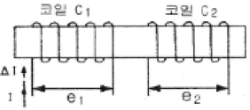
- 전류의 변화는 자속의 변화를 일으키며, 자속의 변화는 코일 C1에 기전력 e1을 발생시킨다.
- 코일 C1에서 발생하는 기전력 e1은 자속의 시간미분값과 코일의 감은 횟수의 곱에 비례한다.
- 코일 C2에서 발생하는 기전력 e2는 렌쯔의 법칙에 의하여 설명이 가능하다.
- 코일 C2에서 발생하는 기전력 e2와 전류 I의 시간 미분값의 관계를 설명해 주는 것이 자기인덕턴스이다.
(정답률: 62%)
64. 1차 전압 3300V, 권수비 30인 단상변압기가 전등부하에 20A를 공급하고자 할 때의 입력전력(kW)은?
- 2.2
- 3.4
- 4.6
- 5.2
(정답률: 54%)
65. 자동제어계의 위상여유, 이득여유가 모두 정(+)이라면 이 계는 어떻게 되는가?
- 진동한다.
- 안정하다.
- 불안정하다.
- 임계안정하다.
(정답률: 61%)
66. 기계적 제어의 요소로서 변위를 공기압으로 변환하는 요소는?
- 다이아프램
- 벨로즈
- 노즐플래퍼
- 피스톤
(정답률: 55%)
67. 그림과 같은 전류 파형을 커패시터 양단에 가하였을 때 커패시터에 충전되는 전압 파형은?
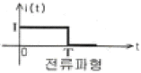
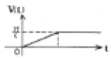
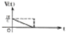
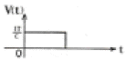
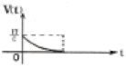
(정답률: 65%)
68. 제어장치가 제어대상에 가하는 제어신호로 제어장치의 출력인 동시에 제어대상의 입력인 신호는?
- 동작신호
- 조작량
- 제어량
- 목표값
(정답률: 54%)
69. 제어계의 동작상태를 교란하는 외란의 영향을 제거할 수 있는 제어는?
- 피드백제어
- 시퀀스제어
- 순서제어
- 개루프제어
(정답률: 75%)
70. 논리식
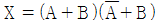
를 간단히 하면?- A
- B
- AB
- A + B
(정답률: 67%)
71. 정격주파수 60Hz의 농형 유도전동기에서 1차 전압을 정격 값으로 하고 50Hz에 사용할 때 감소하는 것은?(오류 신고가 접수된 문제입니다. 반드시 정답과 해설을 확인하시기 바랍니다.)
- 토크
- 온도
- 역률
- 여자전류
(정답률: 58%)
72. 어떤 전지의 외부회로의 저항은 4Ω이고, 전류는 5A가 흐른다. 외부회로에 4Ω대신 8Ω의 저항을 접속하였더니 전류가 3A로 떨어졌다면, 이 전지의 기전력은 몇 V 인가?
- 10
- 20
- 30
- 40
(정답률: 40%)
73. 자기인덕턴스 377 mH에 200 V, 60 Hz의 교류전압을 가했을 때 흐르는 전류는 약 몇 A 인가?
- 0.4
- 0.7
- 1.0
- 1.4
(정답률: 34%)
74. 시퀀스회로의 a 접점에 대한 설명으로 옳은 것은?
- 수동으로 리셋트 할 수 있는 접점이다.
- 누름버튼스위치의 접점이 붙어있는 상태를 말한다.
- 두 접점이 상호 인터록이 되는 접점을 말한다.
- 전원을 투입하지 않았을 때 떨어져 있는 접점이다.
(정답률: 64%)
75. 자동화의 네 번째 단계로서 전 공장의 자동화를 컴퓨터 통합 생산 시스템으로 구성하는 것은?
- FMC(Factory Manufacturing Cell)
- FMS(Flexible Manufacturing System)
- C I M (Computer Intergrated Ma- nufacturing)
- M I S (Management Information System)
(정답률: 68%)
76. SCR에 대한 설명으로 틀린 것은?
- PNPN 소자이다.
- 스위칭 소자이다.
- 쌍방향성 사이리스터이다.
- 직류, 교류의 전력제어용으로 사용된다.
(정답률: 62%)
77. 제너다이오드 회로에서 V1 = 20sinωtV, V2 = 5V, RL ＜ RS일 때 V2의 파형으로 옳은 것은?
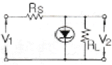
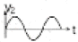
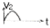
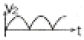
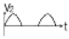
(정답률: 55%)
78. 2차계 시스템의 응답형태를 결정하는 것은?
- 히스테리시스
- 정밀도
- 분해도
- 제동계수
(정답률: 50%)
79. 그림과 같은 블록선도에서 C/R의 값은?
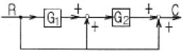
- G1ㆍG2+G2+1
- G1ㆍG2+1
- G1ㆍG2+G2
- G1ㆍG2+G1+1
(정답률: 57%)
80. R = 4Ω, XL = 9Ω, XC = 6Ω인 직렬접속 회로의 어드미턴스는 몇 ℧인가?
- 4+j8
- 0.16-j0.12
- 4-j5
- 0.16+j0.12
(정답률: 50%)
5과목: 배관일반
81. 공기조화설비의 전공기 방식에 속하지 않는 것은?
- 단일덕트 방식
- 이중덕트 방식
- 팬코일 유닛 방식
- 멀티 존 유닛 방식
(정답률: 71%)
82. 급수관의 수리 시 물을 배제하기 위해 최소 관의 어느 정도 구배를 주어야 하는가?
- 1/120 이상
- 1/150 이상
- 1/200 이상
- 1/250 이상
(정답률: 57%)
83. 증기보일러 배관방식 중 환수관의 일부가 파손된 경우에 보일러 수가 유출해서 안전수위 이하가 되어 보일러 수가 빈 상태로 되는 것을 방지하기 위한 접속법은?
- 하트 포드 접속법
- 리프트 접속법
- 스위블 접속법
- 슬리브 접속법
(정답률: 77%)
84. 증기배관의 수평 환수관에서 관경을 축소할 때 사용하는 이음쇠로 가장 적합한 것은?
- 소켓
- 부싱
- 플랜지
- 편심 리듀서
(정답률: 75%)
85. 덕트의 단위길이 당 마찰손실이 일정하도록 치수를 결정하는 덕트 설계법은?
- 등마찰손실법
- 정속법
- 등온법
- 정압재취득법
(정답률: 76%)
86. 다음 중 배수 트랩의 종류로 가장 거리가 먼 것은?
- 드럼트랩
- 피(P)트랩
- 에스(S)트랩
- 버킷트랩
(정답률: 56%)
87. 급수펌프에서 발생하는 캐비테이션 현상의 방지법으로 가장 거리가 먼 것은?
- 펌프설치 위치를 낮춘다.
- 입형펌프를 사용한다.
- 흡입손실수두를 줄인다.
- 회전수를 올려 흡입속도를 증가시킨다.
(정답률: 77%)
88. 동관 이음의 종류가 아닌 것은?
- 납땜 이음
- 용접 이음
- 나사 이음
- 압축 이음
(정답률: 61%)
89. 슬리브 신축 이음쇠에 대한 설명 중 틀린 것은?
- 신축량이 크고 신축으로 인한 응력이 생기지 않는다.
- 직선으로 이음하므로 설치 공간이 루프형에 비하여 적다.
- 배관에 곡선부가 있어도 파손이 되지 않는다.
- 장시간 사용 시 패킹의 마모로 누수의 원인이 된다.
(정답률: 60%)
90. 주철관 이음 중 기계식이음에 대한 설명으로 틀린 것은?
- 굽힘성이 풍부하므로 이음부가 다소 굴곡이 있어도 누수 되지 않는다.
- 수중작업이 불가능하다.
- 간단한 공구로 신속하게 이음이 되며 숙련공이 필요하지 않다.
- 고압에 대한 저항이 크다.
(정답률: 60%)
91. 다음 중 나사용 패킹류가 아닌 것은?
- 페인트
- 네오프렌
- 일산화연
- 액상합성수지
(정답률: 55%)
92. 다음 중 무기질 보온재가 아닌 것은?
- 유리면
- 암면
- 규조토
- 코르크
(정답률: 68%)
93. 관의 신축이음에 대한 설명으로 틀린 것은?
- 슬리브와 본체 사이에 패킹을 넣어 온수 또는 증기가 누설되는 것을 방지하며, 물, 공기, 가스, 기름 등의 배관에 사용되는 것은 슬리브형이다.
- 응축수가 고이면 부식의 우려가 있으므로 트랩과 함께 사용되며, 패킹을 넣어 누설을 방지하는 것은 벨로즈형이다.
- 배관의 구부림을 이용하여 신축이음하며, 고온고압의 옥외 배관에 많이 사용되는 것은 루프형이다.
- 2개 이상의 엘보를 사용하여 이음부의 나사 회전을 이용해서 배관의 신축을 흡수하는 것은 스위블형이다.
(정답률: 59%)
94. 급수방식 중 급수량의 변화에 따라 펌프의 회전수 제어에 의해 급수압을 일정하게 유지할 수 있는 회전수 제어시스템을 이용한 방식은?
- 고가수조방식
- 수도직결방식
- 압력수조방식
- 펌프직송방식
(정답률: 65%)
95. 증기배관 시공시 환수관의 구배는?
- 1/250 이상의 내림구배
- 1/350 이상의 내림구배
- 1/250 이상의 올림구배
- 1/350 이상의 올림구배
(정답률: 60%)
96. 도시가스 배관 매설에 대한 설명으로 틀린 것은?
- 배관을 철도부지에 매설하는 경우에는 배관의 외면으로부터 궤도 중심까지 거리는 4m 이상 유지할 것
- 배관을 철도부지에 매설하는 경우에는 배관의 외면으로부터 철도부지 경계까지 거리는 0.6m이상 유지할 것
- 배관을 철도부지에 매설하는 경우에는 지표면으로부터 배관의 외면까지의 깊이는 1.2m 이상 유지할 것
- 배관의 외면으로부터 도로의 경계까지 수평거리 1m 이상 유지할 것
(정답률: 62%)
97. 동관용 공구로 가장 거리가 먼 것은?
- 링크형파이프커터
- 익스팬더
- 플레어링 툴
- 사이징 툴
(정답률: 51%)
98. 저압 가스배관의 보수 또는 연장을 위하여 가스를 차단할 경우 사용하는 기구는?
- 가스팩
- 가스미터
- 정압기
- 부스터
(정답률: 64%)
99. 5명 가족이 생활하는 아파트에서 급탕가열기를 설치하려고 할 때 필요 가열기의 용량은? (단, 1일 1인당 급탕량 90ℓ/d, 1일 사용량에 대한 시간당 가열능력 비율 1/7, 탕의 온도 70℃, 급수온도 20℃이다.)
- 약 459 kcal/h
- 약 643 kcal/h
- 약 2250 kcal/h
- 약 3214 kcal/h
(정답률: 51%)
100. 세정밸브식 대변기에서 급수관의 관경은 얼마 이상이어야 하는가?
- 15A
- 25A
- 32A
- 40A
(정답률: 62%)
상태와 상태량은 물질의 상태를 나타내는 물리량이다. 상태는 물질이 가지는 상(고체, 액체, 기체)를 의미하며, 상태량은 상태를 결정하는 물리량으로, 예를 들어 온도, 압력, 부피 등이 있다.
순수물질 단순 압축성 시스템의 경우, 상태는 압력과 부피(또는 밀도)에 의해 완전하게 결정된다. 이는 상태량이 2개이기 때문이다.
하지만 상변화를 포함하는 물과 수증기의 경우, 상태는 온도와 비체적(또는 밀도)에 의해 완전하게 결정된다. 이는 상변화가 일어나면서 상태량이 추가되기 때문이다. 예를 들어, 물의 경우 온도와 압력이 일정한 상태에서는 액체 상태를 가지지만, 일정한 온도와 압력에서는 수증기 상태를 가진다. 이때, 온도와 비체적(또는 밀도)이 결정적인 역할을 한다.